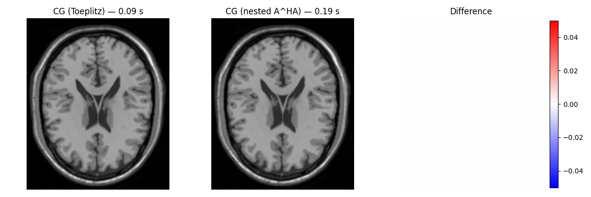
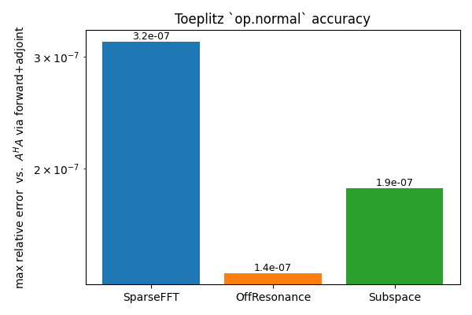

Note
Go to the end to download the full example code.
Toeplitz-Embedded Self-Adjoint A^H A for SparseFFT Gadgets#
Iterative reconstructions (CG, FISTA) repeatedly evaluate the normal
operator A^H A. PyGROG ships a Toeplitz-embedded short-circuit:
op.normal(image) builds a small PSF once and replaces every
forward+adjoint NUFFT pair by a pad → FFT → multiply → IFFT → crop
sequence.
The example has two parts:
End-to-end pipeline — a real BrainWeb / spiral / GROG / SparseFFT acquisition, a CG reconstruction using
op.normal, and a runtime comparison against the nestedforward(adjoint(.))baseline.Accuracy panel for the gadgets — small synthetic problems verifying that the Toeplitz versions of ORC and subspace operators match the nested baseline to numerical noise.
The Toeplitz path is the default on CPU and is opt-in on CUDA via
toeplitz=True.
import time
import matplotlib.pyplot as plt
import numpy as np
import torch
from brainweb_dl import get_mri
from mrinufft import get_operator, initialize_2D_spiral
from mrinufft.density import voronoi
from pygrog.calib import GrogInterpolator
from pygrog.gadgets._off_resonance import OffResonanceSparseFFT
from pygrog.gadgets._subspace import SubspaceSparseFFT
from pygrog.operator import SparseFFT
Helpers#
def _synthetic_smaps(shape, n_coils=4):
ny, nx = shape
yy, xx = np.mgrid[-1 : 1 : ny * 1j, -1 : 1 : nx * 1j]
smaps = []
for angle in np.linspace(0.0, 2.0 * np.pi, n_coils, endpoint=False):
cx, cy = np.cos(angle), np.sin(angle)
gauss = np.exp(-((xx - cx) ** 2 + (yy - cy) ** 2) / (2.0 * 0.45**2))
phase = np.exp(1j * (cx * xx + cy * yy))
smaps.append(gauss * phase)
smaps = np.asarray(smaps, dtype=np.complex64)
smaps /= np.sqrt((np.abs(smaps) ** 2).sum(0, keepdims=True)) + 1e-12
return smaps
def _bench(fn, x, n_warmup=2, n_iter=10):
for _ in range(n_warmup):
out = fn(x)
t0 = time.perf_counter()
for _ in range(n_iter):
out = fn(x)
return (time.perf_counter() - t0) / n_iter, out
def _rel_err(a, b):
a = a.detach().cpu().numpy()
b = b.detach().cpu().numpy()
return float(np.abs(a - b).max() / (np.abs(b).max() + 1e-30))
Part 1 — end-to-end SparseFFT with CG reconstruction#
image = np.flip(get_mri(0, "T1"), axis=(0, 1, 2))[90].astype(np.float32)
image /= image.max() + 1e-8
shape = image.shape
n_coils = 8
samples = initialize_2D_spiral(Nc=48, Ns=600, nb_revolutions=10).astype(np.float32)
density = voronoi(samples)
smaps = _synthetic_smaps(shape, n_coils=n_coils)
nufft_sim = get_operator("finufft")(
samples=samples,
shape=shape,
n_coils=n_coils,
smaps=smaps,
density=density,
squeeze_dims=True,
)
kspace = nufft_sim.op(image.astype(np.complex64))
# GROG calibration region from a Cartesian k-space of the coil-modulated image.
coil_calib = smaps * image[None, ...]
calib_full = np.fft.fftshift(
np.fft.fftn(np.fft.ifftshift(coil_calib, axes=(-2, -1)), axes=(-2, -1)),
axes=(-2, -1),
).astype(np.complex64)
cy, cx = shape[0] // 2, shape[1] // 2
calib_size = 24
calib = calib_full[
:,
cy - calib_size // 2 : cy + calib_size // 2,
cx - calib_size // 2 : cx + calib_size // 2,
]
coords = (samples * np.asarray(shape, dtype=np.float32)).astype(np.float32)
grog = GrogInterpolator(
shape=shape,
coords=coords,
kernel_width=2,
oversamp=1.25,
image_shape=shape,
)
grog.calc_interp_table(calib, lamda=0.01, precision=1)
op_t = SparseFFT(plan=grog.plan, smaps=smaps, toeplitz=True)
op_n = SparseFFT(plan=grog.plan, smaps=smaps, toeplitz=False)
# A^H A timing on a random image
torch.manual_seed(0)
x = torch.randn(*shape, dtype=torch.complex64)
t_toep, y_toep = _bench(op_t.normal, x)
t_nest, y_nest = _bench(op_n.normal, x)
err_sparse = _rel_err(y_toep, y_nest)
print(
f"SparseFFT Toeplitz {t_toep*1e3:7.2f} ms | nested {t_nest*1e3:7.2f} ms"
f" | speed-up x{t_nest/t_toep:5.2f} | rel-err {err_sparse:.2e}"
)
/home/mcencini/.conda/envs/pygrog/lib/python3.13/site-packages/mrinufft/_utils.py:67: UserWarning: Samples will be rescaled to [-pi, pi), assuming they were in [-0.5, 0.5)
warnings.warn(
SparseFFT Toeplitz 5.87 ms | nested 12.35 ms | speed-up x 2.10 | rel-err 3.18e-07
CG using op.normal#
def cg(A_normal, b, n_iter=12):
x = torch.zeros_like(b)
r = b - A_normal(x)
p = r.clone()
rs_old = torch.vdot(r.flatten().conj(), r.flatten())
for _ in range(n_iter):
Ap = A_normal(p)
alpha = rs_old / (torch.vdot(p.flatten().conj(), Ap.flatten()) + 1e-30)
x = x + alpha * p
r = r - alpha * Ap
rs_new = torch.vdot(r.flatten().conj(), r.flatten())
p = r + (rs_new / (rs_old + 1e-30)) * p
rs_old = rs_new
return x
# Right-hand side b = A^H y with density compensation.
n_shots, n_read = samples.shape[:2]
sparse = grog.interpolate(
kspace.reshape(n_coils, n_shots, n_read).astype(np.complex64),
ret_image=False,
)
b = op_t.adjoint(torch.as_tensor(sparse) * grog.plan.pre_weights)
t0 = time.perf_counter()
recon_toep = cg(op_t.normal, b, n_iter=12)
t_cg_toep = time.perf_counter() - t0
t0 = time.perf_counter()
recon_nest = cg(op_n.normal, b, n_iter=12)
t_cg_nest = time.perf_counter() - t0
print(
f"CG (12 iter): Toeplitz {t_cg_toep:.2f} s | nested {t_cg_nest:.2f} s"
f" | speed-up x{t_cg_nest/t_cg_toep:.2f}"
)
recon_t_np = np.abs(recon_toep.detach().cpu().numpy())
recon_n_np = np.abs(recon_nest.detach().cpu().numpy())
recon_t_np /= recon_t_np.max() + 1e-12
recon_n_np /= recon_n_np.max() + 1e-12
diff = recon_t_np - recon_n_np
fig, axes = plt.subplots(1, 3, figsize=(12, 4))
axes[0].imshow(recon_t_np, cmap="gray", origin="lower")
axes[0].set_title(f"CG (Toeplitz) — {t_cg_toep:.2f} s")
axes[0].axis("off")
axes[1].imshow(recon_n_np, cmap="gray", origin="lower")
axes[1].set_title(f"CG (nested A^HA) — {t_cg_nest:.2f} s")
axes[1].axis("off")
im = axes[2].imshow(diff, cmap="bwr", vmin=-0.05, vmax=0.05, origin="lower")
axes[2].set_title("Difference")
axes[2].axis("off")
fig.colorbar(im, ax=axes[2], fraction=0.046, pad=0.04)
plt.tight_layout()
plt.show()

CG (12 iter): Toeplitz 0.09 s | nested 0.19 s | speed-up x2.20
Part 2 — accuracy of the gadget Toeplitz operators#
Small random problems where OffResonanceSparseFFT and
SubspaceSparseFFT are constructed directly (no broadcasting through
the high-level helpers). For each gadget we compare op.normal for
toeplitz=True and toeplitz=False.
def _make_small_sparse_fft(grid, n_samples, n_coils, *, toeplitz, seed=0):
rng = np.random.default_rng(seed)
indices = rng.integers(0, int(np.prod(grid)), n_samples).astype(np.int64)
weights = rng.random(n_samples).astype(np.float32) + 0.1
smaps = (
rng.standard_normal((n_coils, *grid))
+ 1j * rng.standard_normal((n_coils, *grid))
).astype(np.complex64) * 0.5
return SparseFFT(
grid_shape=grid,
image_shape=grid,
indices=indices,
weights=weights,
smaps=smaps,
toeplitz=toeplitz,
)
# ---- ORC ----------------------------------------------------------------
grid = (32, 32)
n_samples = 800
L = 4
op_b_t = _make_small_sparse_fft(grid, n_samples, 4, toeplitz=True, seed=0)
op_b_n = _make_small_sparse_fft(grid, n_samples, 4, toeplitz=False, seed=0)
rng = np.random.default_rng(11)
B = (
rng.standard_normal((n_samples, L)) + 1j * rng.standard_normal((n_samples, L))
).astype(np.complex64)
C = (rng.standard_normal((L, *grid)) + 1j * rng.standard_normal((L, *grid))).astype(
np.complex64
)
orc_t = OffResonanceSparseFFT(op_b_t, B, C, toeplitz=True)
orc_n = OffResonanceSparseFFT(op_b_n, B, C, toeplitz=False)
x_orc = torch.randn(*grid, dtype=torch.complex64)
t_toep, y_toep = _bench(orc_t.normal, x_orc, n_iter=5)
t_nest, y_nest = _bench(orc_n.normal, x_orc, n_iter=5)
err_orc = _rel_err(y_toep, y_nest)
print(
f"ORC (L={L}) Toeplitz {t_toep*1e3:7.2f} ms | nested {t_nest*1e3:7.2f} ms"
f" | speed-up x{t_nest/t_toep:5.2f} | rel-err {err_orc:.2e}"
)
# ---- Subspace -----------------------------------------------------------
import types
T = 12
K = 4
n_pts = 60
n_samples_sub = T * n_pts
rng = np.random.default_rng(13)
indices = rng.integers(0, int(np.prod(grid)), n_samples_sub).astype(np.int64)
weights = rng.random(n_samples_sub).astype(np.float32) + 0.1
smaps_sub = (
rng.standard_normal((4, *grid)) + 1j * rng.standard_normal((4, *grid))
).astype(np.complex64) * 0.5
sort_perm = torch.argsort(torch.as_tensor(indices))
inv_perm = torch.empty_like(sort_perm)
inv_perm[sort_perm] = torch.arange(n_samples_sub)
indices_t = torch.as_tensor(indices)
weights_t = torch.as_tensor(weights)
plan = types.SimpleNamespace(
grid_shape=grid,
image_shape=grid,
grid_size=int(np.prod(grid)),
indices=indices_t[sort_perm],
sqrt_weights=torch.sqrt(weights_t)[sort_perm],
sort_perm=sort_perm,
inv_perm=inv_perm,
natural_shape=(T, n_pts),
n_samples=n_samples_sub,
)
base_sub_t = SparseFFT(plan=plan, smaps=smaps_sub, toeplitz=True)
base_sub_n = SparseFFT(plan=plan, smaps=smaps_sub, toeplitz=False)
basis = (rng.standard_normal((K, T)) + 1j * rng.standard_normal((K, T))).astype(
np.complex64
)
sub_t = SubspaceSparseFFT(base_sub_t, basis, encoding_axis=-2)
sub_n = SubspaceSparseFFT(base_sub_n, basis, encoding_axis=-2)
x_sub = torch.randn(K, *grid, dtype=torch.complex64)
t_toep, y_toep = _bench(sub_t.normal, x_sub, n_iter=5)
t_nest, y_nest = _bench(sub_n.normal, x_sub, n_iter=5)
err_sub = _rel_err(y_toep, y_nest)
print(
f"Subspace (K={K}) Toeplitz {t_toep*1e3:7.2f} ms | nested {t_nest*1e3:7.2f} ms"
f" | speed-up x{t_nest/t_toep:5.2f} | rel-err {err_sub:.2e}"
)
ORC (L=4) Toeplitz 1.23 ms | nested 1.38 ms | speed-up x 1.13 | rel-err 1.37e-07
Subspace (K=4) Toeplitz 0.63 ms | nested 3.09 ms | speed-up x 4.93 | rel-err 1.87e-07
Accuracy summary#
labels = ["SparseFFT", "OffResonance", "Subspace"]
errs = [err_sparse, err_orc, err_sub]
fig, ax = plt.subplots(figsize=(6, 4))
bars = ax.bar(labels, errs, color=["C0", "C1", "C2"])
ax.set_yscale("log")
ax.set_ylabel(r"max relative error vs. $A^H A$ via forward+adjoint")
ax.set_title("Toeplitz `op.normal` accuracy")
for b, e in zip(bars, errs, strict=False):
ax.text(
b.get_x() + b.get_width() / 2,
e,
f"{e:.1e}",
ha="center",
va="bottom",
fontsize=9,
)
plt.tight_layout()
plt.show()

Total running time of the script: (0 minutes 1.755 seconds)